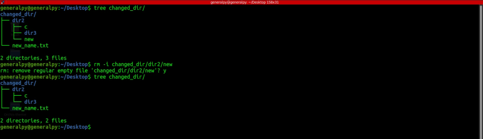

rm command is used to remove files and directories in Linux.
To remove files using rm we just have to provide name(s) of the files.
rm file1 file2.....filenWe can use -i flag to get an interactive prompt when deleting a file or dir.

We can use -v flag for verbose.
To remove a directory we have to use -r flag which stands for recursive as when removing a directory we also have to delete contents inside it.
When removing a write protected item, rm prompts if you want to continue. We can use -f flag which stands for force to remove that behaviour.
In below arrangement we can delete files of user root because they are in home dir of generalpy.
Here we can see use of -f flag.
Since there is no concept of a recycle bin, care must be taken when removing files using rm command. Use tab for autocompletion and check output of wildcard commands before executing.
Files deleted can be recovered by some specialised methods(different from recycle bin) so your data can be retrieved and can be used for malicious purposes. So to prevent this we can use shredding utility which adds random bunch of garbage multiple times in your file so that its contents become unreadable.
Shredding can be done on linux by using shred command.
shred -uv -n <number> <file>-v stands for verbose , -u is used to delete original after shredding and -n specifies number of times a file must be shredded(3 by default)